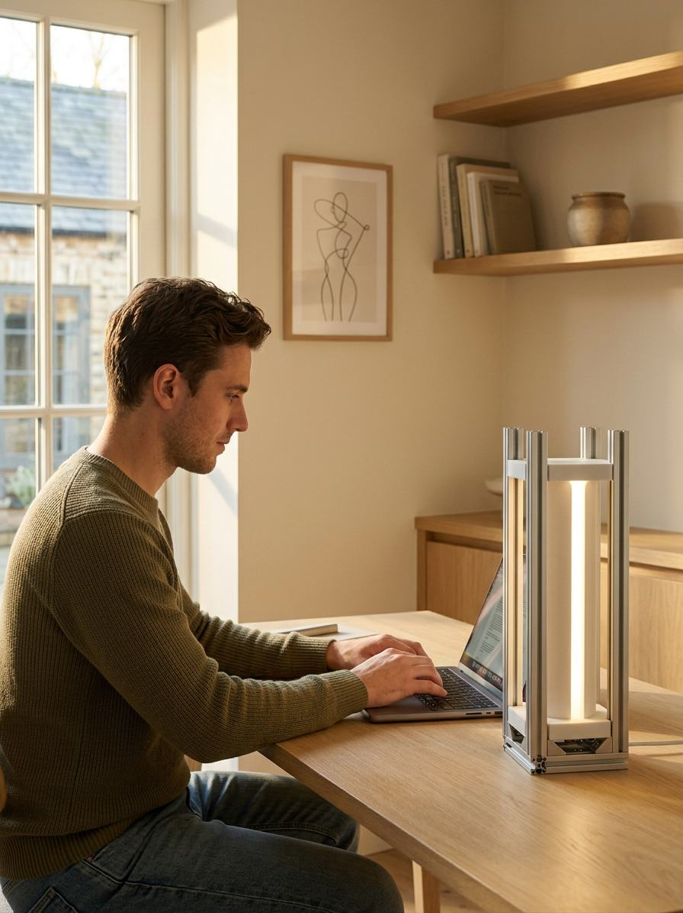
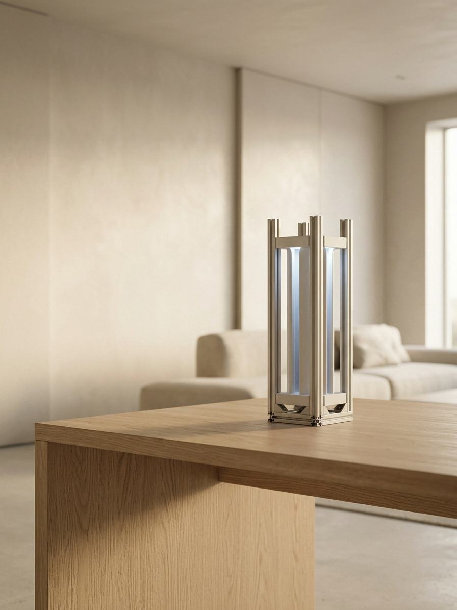
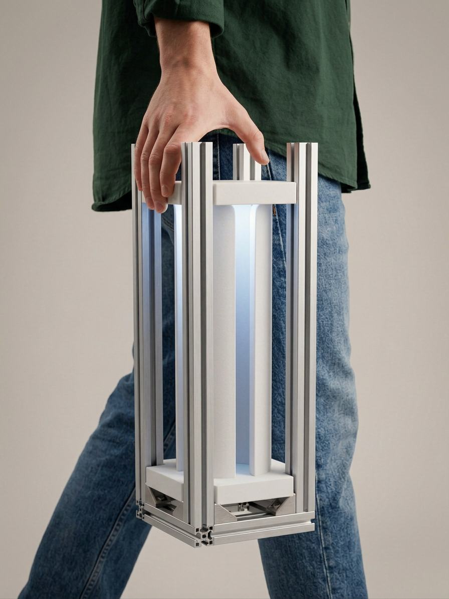
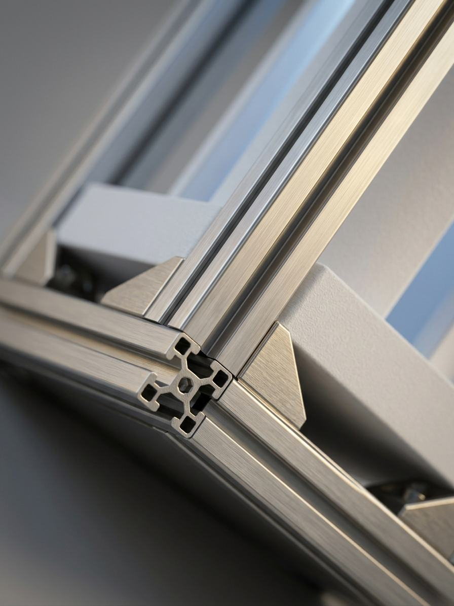
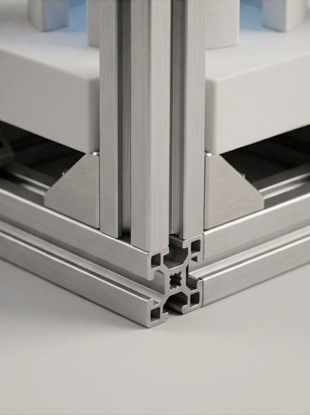
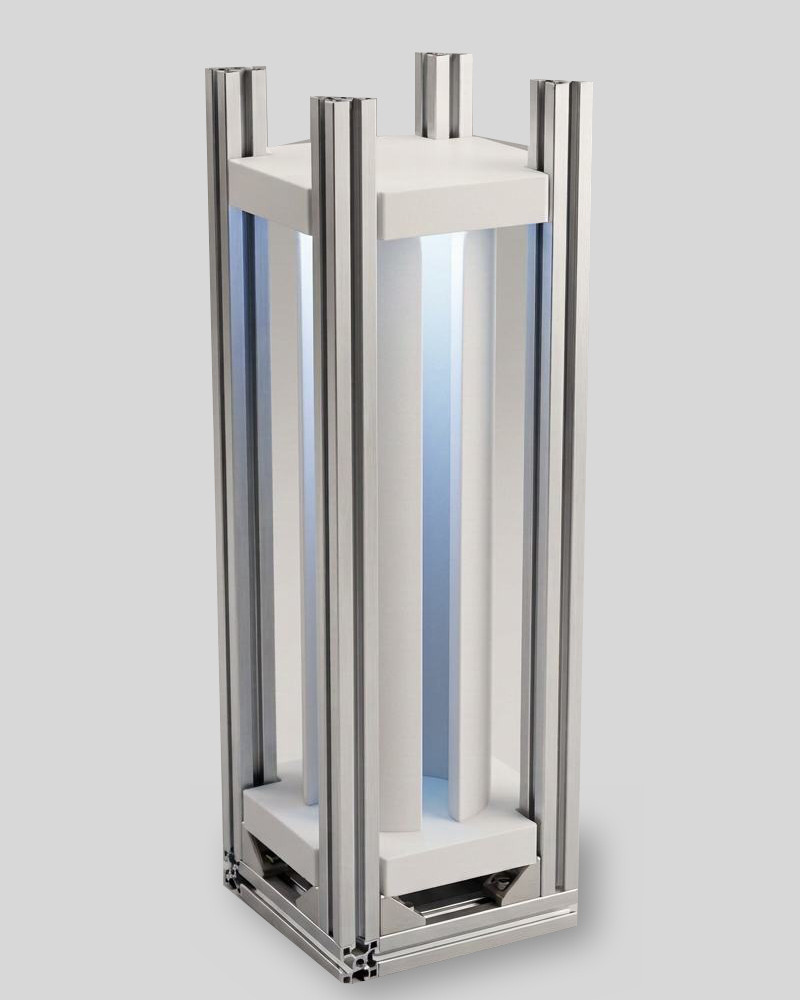
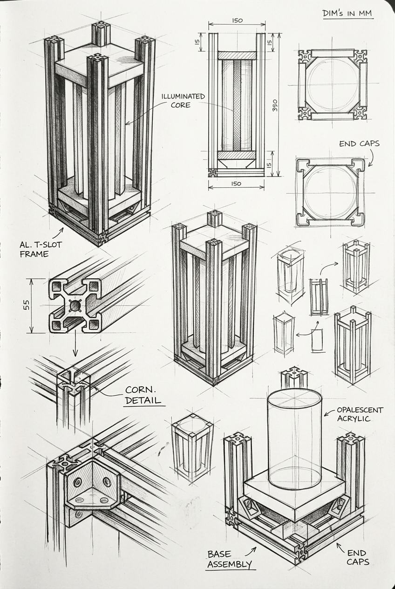
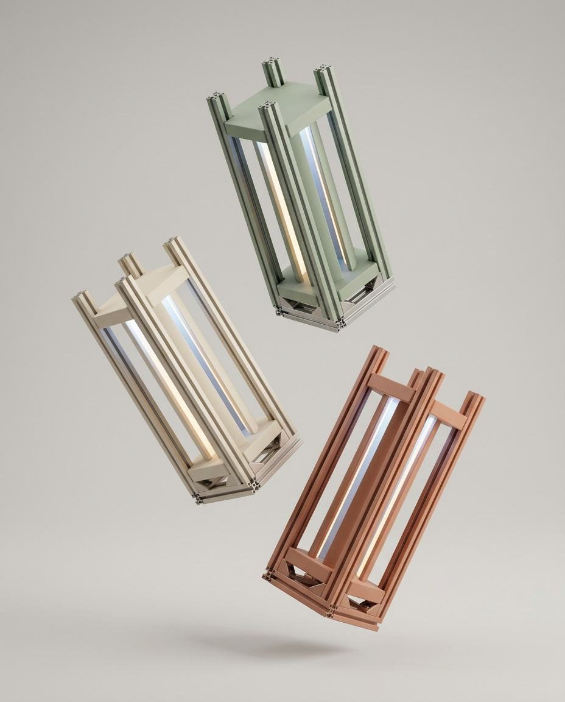

Shape Your Light.
BEND
구부리는 정도에 따라 빛의 세기가 변화하는 직관적인 아날로그 인터랙션.

Problem
정해진 단계의
빛
정해진 밝기 단계로는 사용자가 원하는 빛을 섬세하게 표현하기 어렵다.
고정된 단계 사이의 빛은 고를 수 없다
Solution
굽힘이
밝기가 된다
플렉스 센서의 굽힘 정도를 밝기 값으로 변환하여, 사용자가 원하는 빛의 세기를 연속적으로 조절할 수 있도록 한다.
- 입력구부림
- 변환센서 값
- 출력빛의 세기
Demo Mode · 가상 센서 값
직접 구부려 보세요
- 각도
- 45°
- RAW
- 500
조형을 드래그하거나 방향키로 구부리기
Scenes
공간마다 다른 빛



Material
소재와 구조
알루미늄 프로파일 프레임 안에 발광 코어를 두고, 양 끝을 엔드캡으로 마감했다.


Color
다섯 가지 컬러
현재 센서 레벨 0.50


Specification
사양
- 제품명
- BEND
- 크기
- 150 × 150 × 390 mm
- 프레임·끝단 여백
- 15 mm
- 구조
- 알루미늄 프로파일 프레임, 발광 코어, 엔드캡
- 입력
- 플렉스 센서의 굽힘
- 출력
- 연속 밝기 조절
- 컬러
- 실버, 블랙, 아이보리, 테라코타, 세이지 그린
빛은 더 이상 정해진 값이 아니라, 사용자의 선택에 따라 달라지는 경험이다.
